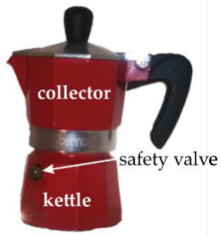
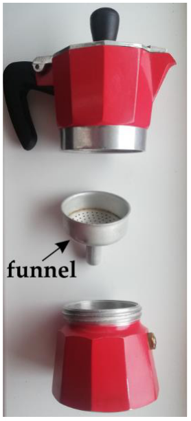
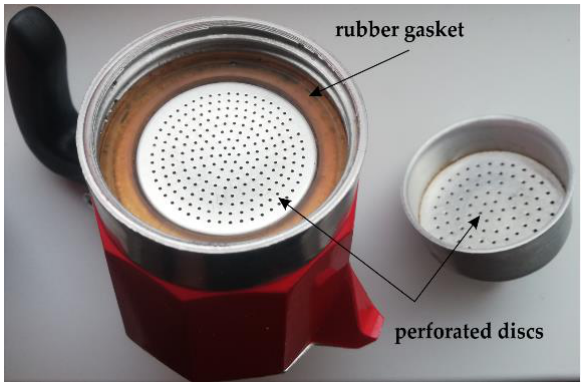
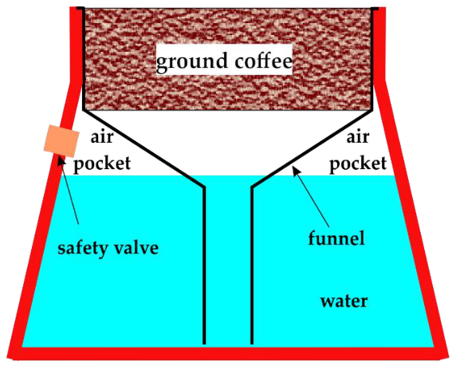

이탈리아에서 가장 널리 쓰이는 커피 추출 기구는 이른바 모카 포트(moka pot)(그림 1)이며, 이 문제의 목적은 커피 추출 과정에서 일어나는 몇 가지 물리적 과정과 현상을 분석하는 것이다.
모카 포트는 모두 알루미늄으로 만든 세 개의 독립된 구조 요소로 이루어져 있다.
– 주전자(kettle, 포트의 아랫부분): 여기에서 물이 가열된다. 주전자의 윗부분에는 안전 압력 밸브(safety pressure valve)가 있다(그림 1과 2).
– 깔때기(funnel): 분쇄 커피 용기를 담고 있다(그림 2). 깔때기의 관은 물속에 잠겨 있지만 주전자 바닥에 닿지는 않는다. 커피 용기는 안지름 $d=4.3\ \text{cm}$, 깊이 $h=1.4\ \text{cm}$인 원기둥 모양이다. 용기의 바닥은 필터(그림 2와 3에서 볼 수 있는 구멍 뚫린 Al 원판)이다. 용기를 커피로 채우면 커피는 물에 대한 다공성 필터 역할을 하는 마개(plug)를 이룬다.
– 수집기(collector, 포트의 윗 용기): 커피 마개를 통과한 물(액체 커피)이 모인다. 수집기의 바닥에는 깔때기에 있는 것과 비슷한 필터(구멍 뚫린 Al 판)가 있으며, 이 필터는 커피 마개의 윗면에 닿는다(그림 3). 이 필터는 고무 개스킷(rubber gasket)으로 둘러싸여 있으며, 이 개스킷은 주전자 안의 물 위, 깔때기와 주전자 벽 사이에 갇힌 공기층(air pocket)을 밀폐한다(그림 3과 4).



모카 포트는 다음과 같이 사용한다(그림 2).
– 주전자에 물을 붓는다(안전 밸브를 넘지 않도록).
– 깔때기를 주전자 안으로 내려 입구를 막는다.
– 깔때기의 용기에 분쇄 커피를 채운다.
– 수집기를 주전자에 돌려 끼운다.
– 포트를 약한 열원 위에 놓는다.
모카 포트의 한 작동 주기는 두 단계로 나눌 수 있다.
A. 물의 온도 상승
B. 깔때기를 통해 주전자에서 수집기로 물이 이동하는 단계. 이 단계는 남은 증기가 주전자에서 빠져나가면서 내는 보글거리는(gurgling) 소리와 함께 끝난다.

이 단계 동안에는 주전자에서 수집기로 물이 흐르지 않는다. 이 가열 과정도 두 부분으로 나눌 수 있다.
a) 물의 온도가 $\theta_1=17.3\ ^\circ\text{C}$에서 $\theta_2=72.0\ ^\circ\text{C}$로 올라가는 동안 물은 깔때기 안에서 올라가며, $\theta_2=72.0\ ^\circ\text{C}$에서 물은 깔때기의 커피 마개 바닥에 있는 구멍 뚫린 원판에 닿는다.
b) 물의 온도가 $\theta_2=72.0\ ^\circ\text{C}$에서 $\theta_3=99.5\ ^\circ\text{C}$로 올라가는 동안 물은 커피 마개를 적신다. $\theta_3=99.5\ ^\circ\text{C}$에서 물은 분쇄 커피 용기를 완전히 채운다.
위의 온도들에서 물에 관한 몇 가지 관심 있는 양(밀도, 포화 증기압, 동점성 계수(dynamic viscosity coefficient))이 다음 표에 주어져 있다.
| $\theta/^\circ\text{C}$ | $\rho_w/\dfrac{\text{kg}}{\text{m}^3}$ | $p_{sv}/\text{kPa}$ | $\eta/10^{-4}\ \text{Pa}\cdot\text{s}$ |
|---|---|---|---|
| 17.3 | 999 | 1.98 | 10.7 |
| 72.0 | 977 | 34.0 | 3.92 |
| 99.5 | 959 | 99.6 | 2.83 |
주전자의 유효 부피(전체 내부 부피에서 깔때기 벽이 밀어낸 부피와 깔때기 용기의 부피를 뺀 것)는 $V_0=84.2\ \text{ml}$이다. 이 부피의 물을 주전자에 부으면 물은 깔때기의 구멍 뚫린 원판에 닿고 물 위에 공기층이 없다(그림 4 참조). 그러나 주전자의 물 높이는 안전 밸브보다 낮아야 한다. 이 문제에서 커피를 만드는 데 사용한 물의 질량은 $m_w=60.0\ \text{g}$이며, 이는 위의 제한 조건을 만족한다. 또한 커피를 추출하는 동안, 이 문제에 주어진 구체적인 자료에 대해서는 안전 압력 밸브가 열리지 않는다.
실험 자료를 수집할 때의 대기압은 $p_0=96.4\ \text{kPa}$였다. 주전자 안 물 위에 있는 공기와 수증기는 이상 기체로 간주하며, 이 문제 전체에서 포트의 열팽창은 무시한다. 가열 과정이 느리므로 물은 항상 그 증기와 동적 평형(dynamical equilibrium) 상태에 있다고 간주한다.
주전자 안의 물 위, 깔때기 벽과 주전자 벽 사이에는 일정한 양의 공기와 변하는 양의 포화 수증기가 갇혀 있다. 이것이 그림 4의 이른바 ”공기층”이다. 가열 과정에서 증발하는 물의 질량이 물의 전체 질량에 비해 무시할 만하다는 것을 알 때, 온도 $\theta_2=72.0\ ^\circ\text{C}$에서 공기층 안 포화 수증기의 질량$(m_{sv,2})$에 대한 식을 유도하고 그 수치를 계산하라. 물의 몰 질량은 $\mu_w=18.0\ \text{g/mol}$, 기체 상수는 $R=8.32\ \text{J/(mol}\cdot\text{K)}$이다.
풀이: 0.9 pt
온도 $\theta_2$에서 공기층 안 포화 수증기의 질량은
이고, 여기서
이며, $\theta_2=72.0\ ^\circ\text{C}$에서 공기가 차지하는 부피는
이고, 여기서
이다. 이 과정에서 증발하는 물의 질량이 물의 전체 질량에 비해 무시할 만하기 때문이다. 따라서
이며, 그 수치는
로, 실제로 물의 질량에 비해 무시할 만하다.
물의 온도가 $\theta_2=72.0\ ^\circ\text{C}$에 도달했을 때, 깔때기 안의 물과 주전자 안의 물의 높이 차는 $\Delta h=12.1\ \text{mm}$이다. 처음 상태($\theta=\theta_1$)에서 공기층의 부피$(V_{air,1})$에 대한 식을 유도하고 그 수치를 계산하라. 중력 가속도는 $g=9.81\ \text{m/s}^2$이다.
풀이: 0.8 pt
가열 단계를 시작할 때 공기층의 부피는 이상 기체의 일반 상태 변화 방정식
\[\frac{p_{air,1}V_{air,1}}{T_1}=\frac{p_{air,2}V_{air,2}}{T_2},\]으로부터 구할 수 있으므로
처음에 공기층(공기와 증기의 혼합물) 안의 압력은 대기압이므로
상태 2에서는
따라서
이며, 그 수치는
$\theta_1\to\theta_2$ 가열 과정 동안 공기층에 갇힌 공기의 내부 에너지 변화$(\Delta U_{air/air\ pocket})$와 수집기 안 공기의 내부 에너지 변화$(\Delta U_{air/collector})$에 대한 수식을 구하고 그 수치를 계산하라. 관심 있는 온도 범위에서 공기의 평균 정적 비열(specific heat at constant volume)은 $c_V=719\ \text{J/(kg}\cdot\text{K)}$이고 공기의 몰 질량은 $\mu_{air}=29.0\ \text{g/mol}$이다.
풀이: 1.4 pt
주전자 안:
공기층은 닫힌계이다. 공기의 질량은
이므로, 내부 에너지 변화는
이고, 그 수치는
수집기 안:
수집기는 밀폐되어 있지 않으므로 그 안의 공기는 열린계이며, 따라서 임의의 온도에서 클라페롱–멘델레예프 방정식(Clapeyron–Mendeleev equation)은
\[p_0V_{collector}=nRT,\]이다. 수집기 안의 공기는 항상 대기압에 있기 때문이다. 포트의 열팽창을 무시한다는 가정 아래 $V_{collector}$도 일정하므로, 임의의 온도에서
이다. 수집기 안 공기의 내부 에너지 변화는
이므로
이고, 그 수치는
온도가 $\theta_2=72.0\ ^\circ\text{C}$에서 $\theta_3=99.5\ ^\circ\text{C}$로 올라가는 동안, 물은 깔때기의 용기를 채우고 있는 커피 마개를 적신다. 커피 마개의 질량은 $m_c=6.0\ \text{g}$이고 다져진 커피의 밀도는 $\rho_c=1190\ \text{kg/m}^3$이다. $\theta_3=99.5\ ^\circ\text{C}$에서 물은 용기를 완전히 채우며, 이것이 커피 추출 1단계의 끝이다. $\theta_3=99.5\ ^\circ\text{C}$에서 주전자 안 물 위의 압력 $p_3$에 대한 식을 유도하고 그 수치를 계산하라. 이 과제에서는 커피 성분이 물에 녹는 것과, 물의 전체 질량에 대한 수증기의 질량은 무시한다.
풀이: 1.1 pt
주전자 안 물 위의 압력은
이고, 여기서
$T_3=372{,}65\ \text{K}$에서 주전자에 갇힌 공기의 부피는
이고, 여기서 물의 부피는
이며, 물에 잠긴 용기의 부피는
따라서
이고, 그 수치는
이 과정은 일정한 온도 $\theta=\theta_3$에서 일어난다. 깔때기의 용기가 물로 채워지면 물은 필터를 통해 흐르기 시작하며, 이 과정의 원동력은 필터 양 끝의 압력 차이다. 물이 수집기로 옮겨지면 모카 포트 작동의 이 두 번째 단계가 끝난다. 잘 알려진 보글거리는 소리가 커피 추출이 끝났음을 알린다.
깔때기의 용기에 분쇄 커피를 채우면, 커피 마개(가장자리의 구멍 뚫린 Al 원판들과 함께)는 원기둥 모양의 필터로 작용하며, 그 성질은 커피 알갱이의 크기와 커피 마개가 얼마나 다져졌는지에 따라 달라진다. 여과 법칙(filtration law)은 필터를 지나는 물의 부피 유량 $Q$와 필터 양면의 압력 차 $\Delta p$ 사이의 관계를 주며, 전기의 옴의 법칙과 비슷하다. 필터의 유체역학적 저항(hydrodynamic resistance) $\mathcal R_h$는 전기에서의 대응물과 마찬가지로 마개 단면의 넓이 $S$와 높이 $h$에 의존하지만, 물의 동점성 계수 $\eta$와 이른바 여과 계수(filtration coefficient) $k$(필터의 투과율(permeability)이라고도 한다)에도 의존한다. 여과 계수가 넓이의 차원을 가지며 SI에서 $\eta$의 단위가 $\text{Pa}\cdot\text{s}$임을 알 때, 차원 분석을 이용하여 $\mathcal R_h$를 $S$, $h$, $k$, $\eta$의 함수로 나타내는 식을 유도하라. 수치 계수는 모두 1로 간주하라.
풀이: 0.7 pt
여과 법칙은
이고
이다. 전기에서 전기 저항은
\[R=\rho\frac{l}{S},\]로 쓸 수 있기 때문이다. 여기서 $\rho$는 주어진 저항체의 비저항(electric resistivity)이다. 그러면 차원 분석을 이용하여
이고, 문제에서 말한 대로
\[C=1,\]이다. 물리량, SI 단위, 차원을 나타낸 다음 표에 따르면
| X | $\mathcal R_h$ | $S$ | $h$ | $\eta$ | $k$ |
| $\langle X\rangle_{\text{SI}}$ | $\text{Pa}\cdot\dfrac{\text{s}}{\text{m}^3}=\dfrac{\text{kg}}{\text{m}^4\text{s}}$ | $\text{m}^2$ | $\text{m}$ | $\text{Pa}\cdot\text{s}=\dfrac{\text{kg}}{\text{m}\cdot\text{s}}$ | $\text{m}^2$ |
| $[X]$ | $\text{L}^{-4}\text{MT}^{-1}$ | $\text{L}^2$ | $\text{L}$ | $\text{L}^{-1}\text{MT}^{-1}$ | $\text{L}^2$ |
차원 방정식은
\[\text{L}^{-4}\text{MT}^{-1}=(\text{L}^{-1}\text{MT}^{-1})^\alpha\text{L}^{2\beta}\text{L}\cdot\text{L}^{-2},\]가 되고, 지수를 같게 놓으면
\[\begin{cases}\alpha=1\\ \beta=-1\end{cases},\]이므로
모카 포트 작동 주기의 두 번째 단계 동안 공기층 안 공기의 압력의 변화 법칙을 시간의 함수 $p_{air}(t)$로 유도하라. 간단히 하기 위해, 이 단계 동안 필터의 유체역학적 저항은 일정하다고 간주하라.
풀이: 1.4 pt
물의 흐름 방정식은
이다.
\[a=p_{sv,3}-p_0=3.2\ \text{kPa},\]로 놓으면 위의 방정식은
로 쓸 수 있다. 주전자 안 물의 부피는 시간에 따라 줄어들기 때문이다.
두 번째 단계는 본질적으로 $T_3=372.65\ K$에서의 등온 과정이며, 이때 공기의 부피는
이다. 여기서 $V$는 그 순간 물이 차지하는 부피이다. 따라서
이고, 이로부터
을 얻는다. 변수를 분리하면
\[\frac{dp_{air}}{p_{air}^2(p_{air}+a)}=-\frac{dt}{\mathcal R_hp_{air3}V_{air3}}.\]이다. 문제 끝에 주어진 적분을 이용하면
이다. $a=3.2\ \text{kPa}$이고 $p_{air}$는 $p_{air3}=42\ \text{kPa}$와 $p_{air4}=\dfrac{p_{air3}V_{air3}}{V_0}=18.5\ \text{kPa}\cong19\ \text{kPa}$ 사이에서 변하므로, 비 $\dfrac{a}{p_{air}}$는 0.076과 0.17 사이에서 변한다. 따라서 로그 함수는 문제 끝에 제시된 대로
\[\ln(1+x)\cong x-\frac{x^2}{2},\quad x<0.177\ \text{일 때},\]로 근사할 수 있으므로, 위의 방정식은
로 쓸 수 있다. 적분 상수는 $t=0\to p_{air}=p_{air3}$임을 고려하여 구할 수 있으므로
이다. 결과적으로
용기를 분쇄 커피로 채웠을 때, 물이 필터를 통과하는 데 걸리는 시간은 $\tau_c=54\ \text{s}$이다. 분쇄 커피로 채워진 필터의 유체역학적 저항$(\mathcal R_h)$에 대한 식을 유도하고 그 수치를 계산하라.
풀이: 0.7 pt
2단계가 끝날 때 주전자 안 공기의 압력은 $p_{air4}$(위에서 수치를 구했다)이므로
이다.
이므로
그 수치는
깔때기의 용기가 비어 있을 때, 같은 양의 물이 이 필터를 통과하는 시간은 $\tau_0=17\ \text{s}$이며, 깔때기를 통한 물의 이동은 커피 마개가 있을 때와 같은 온도에서 일어난다. 커피의 여과 계수$(k)$에 대한 식을 유도하고 그 수치를 계산하라. 커피 마개가 없더라도 물은 위와 같은 온도에서 깔때기 용기의 바닥에 도달한다고 가정하라. 커피 마개가 용기 안에 있을 때에는, 필터를 통과하는 물이 모두 커피를 지난다고 간주하라.
풀이: 1.2 pt
문제의 서술로부터 상태 1과 2는 같고, 상태 3은 다음으로 특징지어지는 상태 3′이 된다.
그리고
\[p'_3=p'_{air,3}+p_{sv,3},\]이고, 여기서
이다. 따라서
\[p'_3=37\ \text{kPa}+99{,}6\ \text{kPa}=136.6\ \text{kPa}\cong1.4\cdot10^2\ \text{kPa}.\]변화 3 → 4와 3′ → 4′은 각각 등온 과정이고, 같은 양의 공기가 같은 온도에서 같은 나중 부피를 가지므로
\[p'_{air4}=p_{air4}=19\ \text{kPa}.\]이다. 그러면
이고, 그 수치는
이다.
이므로
이다. 최종적으로, 사용한 커피의 여과 계수는
이고, 그 수치는
여과 과정 동안 공기층의 공기가 주전자 안의 물에 한 일$(\mathcal W_{air})$과 공기층의 포화 수증기가 주전자 안의 물에 한 일$(\mathcal W_{sv})$에 대한 식을 각각 유도하고 그 수치를 계산하라.
풀이: 0.8 pt
등온 팽창하는 동안 공기가 한 일은
이고, 그 수치는
포화 증기가 한 일은
이고, 그 수치는
주전자의 물을 필터에 통과시키는 데 한 일$(\mathcal W_w)$에 대한 식을 유도하고 그 수치를 계산하라.
풀이: 1.0 pt
물이 필터를 통과하게 하려고 물에 한 일은
이고, 여기서 $P$는 물을 필터에 통과시키는 데 필요한 일률이다.
따라서
이고, B2에서 유도한 $p_{air}$의 시간 변화 법칙을 이용하면 일은
이다. 최종적으로 문제 끝에 주어진 적분을 이용하면 일은
가 된다. 수치로는
참고: 필요하면 다음 정보 중 하나를 사용할 수 있다.
\[\ln(1+x)\cong x-\frac{x^2}{2}\]위 근사의 상대 오차는 $x<0.177$일 때 1% 미만이다.
\[\int\frac{dx}{x^2(x+a)}=\frac{1}{a^2}\left[\ln\left(1+\frac{a}{x}\right)-\frac{a}{x}\right]+\mathcal C\] \[\int\frac{dx}{\sqrt{1+ax}}=\frac{2}{a}\sqrt{1+ax}+\mathcal C\] \[\int\frac{dx}{1+ax}=\frac{1}{a}\ln(1+ax)+\mathcal C\]Assoc. Prof. Sebastian POPESCU, PhD
Faculty of Physics, Alexandru Ioan Cuza University of Iasi, ROMANIA